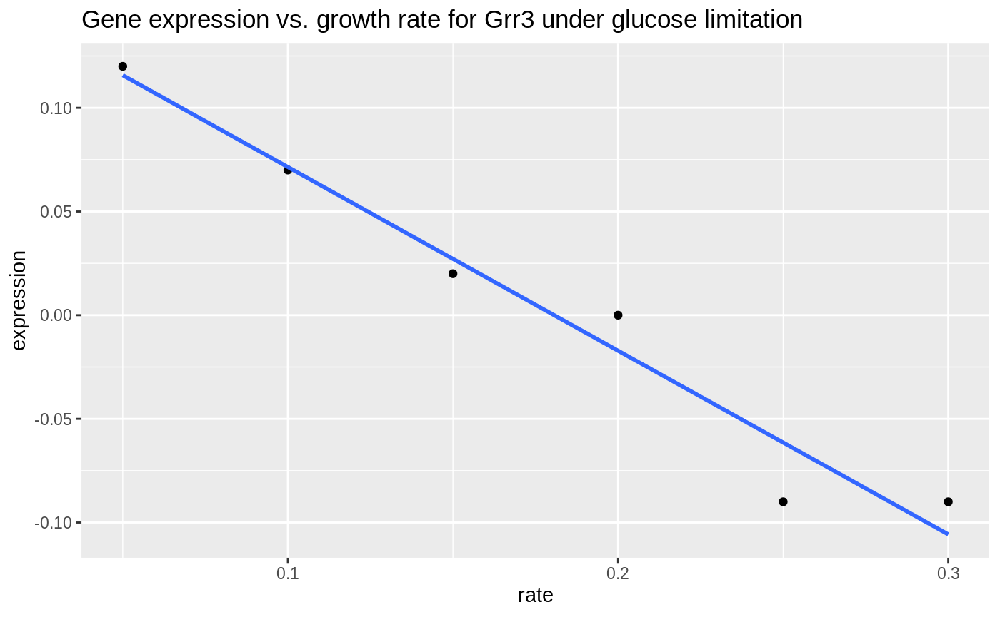

vignettes/class-3.Rmd
class-3.Rmdlibrary(tidyverse)
#> ── Attaching packages ────────────────────────────────── tidyverse 1.2.1 ──
#> ✔ ggplot2 3.1.0 ✔ purrr 0.2.5
#> ✔ tibble 1.4.2 ✔ dplyr 0.7.8
#> ✔ tidyr 0.8.2 ✔ stringr 1.3.1
#> ✔ readr 1.3.0 ✔ forcats 0.3.0
#> ── Conflicts ───────────────────────────────────── tidyverse_conflicts() ──
#> ✖ dplyr::filter() masks stats::filter()
#> ✖ dplyr::lag() masks stats::lag()
library(pbda)NA, NaN and NULL
Don’t use use zeroes to represent missing data. 0 is valid observed value.
NA (Not Available) is most often use to represent missing data.
NaN (Not a Number) is the result of an undefined operation, e.g. 0 / 0.
NULL means “undefined” and is only used in a programming context (i.e., a function that returns NULL). You can’t put NULL values in a data frame.
Let’s examine a data frame with some missing data.
filter with is.na()
You can identify variables with NA values by combining filter() and is.na().
# find rows where name is NA
missing_ex %>% filter(is.na(name))
#> # A tibble: 5 x 5
#> group id name value1 value2
#> <dbl> <dbl> <chr> <dbl> <int>
#> 1 0 3 <NA> NA NA
#> 2 1 3 <NA> NA NA
#> 3 2 3 <NA> NA NA
#> 4 3 3 <NA> 3 6
#> 5 4 3 <NA> NA NA
# find rows where id is *not* NA
missing_ex %>% filter(!is.na(id))
#> # A tibble: 25 x 5
#> group id name value1 value2
#> <dbl> <dbl> <chr> <dbl> <int>
#> 1 0 0 d NA NA
#> 2 0 1 a NA NA
#> 3 0 2 b NA NA
#> 4 0 2 c NA 8
#> 5 0 3 <NA> NA NA
#> 6 1 0 d NA NA
#> 7 1 1 a 1 NA
#> 8 1 2 b NA NA
#> 9 1 2 c NA NA
#> 10 1 3 <NA> NA NA
#> # ... with 15 more rowsThe brauer_gene_exp data contains a data set from a manuscript describing how gene expression changes in yeast under several nutrient limitation conditions.
We’ll explore this data in broad strokes to get you thinking about how to ask simple biological questions with a complex data set. We’ll draw from a more thorough examination by David Robinson in a blog post—this is a good read if you’re interested in digging in more deeply.
sorted <- brauer_gene_exp %>%
select(systematic_name, rate, expression) %>%
arrange(rate, desc(expression))
sorted %>% head(10)
#> # A tibble: 10 x 3
#> systematic_name rate expression
#> <chr> <dbl> <dbl>
#> 1 YKR039W 0.05 6.64
#> 2 YJR152W 0.05 6.64
#> 3 YCR098C 0.05 6.64
#> 4 YDR281C 0.05 6.64
#> 5 YLL057C 0.05 6.64
#> 6 YGR087C 0.05 6.64
#> 7 YBR072W 0.05 6.64
#> 8 YAR071W 0.05 6.57
#> 9 YIL166C 0.05 6.5
#> 10 YBR093C 0.05 6.48
sorted %>% tail(10)
#> # A tibble: 10 x 3
#> systematic_name rate expression
#> <chr> <dbl> <dbl>
#> 1 YLR174W 0.3 -4.51
#> 2 YDR343C 0.3 -4.61
#> 3 YLR377C 0.3 -4.62
#> 4 YER065C 0.3 -4.75
#> 5 YDR342C 0.3 -4.83
#> 6 YDR343C 0.3 -4.92
#> 7 YNL117W 0.3 -4.97
#> 8 YJR095W 0.3 -5.14
#> 9 YKL217W 0.3 -5.44
#> 10 YMR303C 0.3 -6.04You can also use the View() function to examine the data in a spreadsheet-like viewer.
Use sample_n() and sample_frac() to randomly select rows from a large data set. Get a reproducible sample using set.seed()
brauer_gene_exp
#> # A tibble: 198,430 x 7
#> name BP MF systematic_name nutrient rate expression
#> <chr> <chr> <chr> <chr> <chr> <dbl> <dbl>
#> 1 SFB2 ER to Gol… molecular f… YNL049C Glucose 0.05 -0.24
#> 2 "" biologica… molecular f… YNL095C Glucose 0.05 0.28
#> 3 QRI7 proteolys… metalloendo… YDL104C Glucose 0.05 -0.02
#> 4 CFT2 mRNA poly… RNA binding YLR115W Glucose 0.05 -0.33
#> 5 SSO2 vesicle f… t-SNARE act… YMR183C Glucose 0.05 0.05
#> 6 PSP2 biologica… molecular f… YML017W Glucose 0.05 -0.69
#> 7 RIB2 riboflavi… pseudouridy… YOL066C Glucose 0.05 -0.55
#> 8 VMA13 vacuolar … hydrogen-tr… YPR036W Glucose 0.05 -0.75
#> 9 EDC3 deadenyly… molecular f… YEL015W Glucose 0.05 -0.24
#> 10 VPS5 protein r… protein tra… YOR069W Glucose 0.05 -0.16
#> # ... with 198,420 more rows
# sample 1e5 rows
set.seed(1234)
brauer_gene_exp %>% sample_n(1e3)
#> # A tibble: 1,000 x 7
#> name BP MF systematic_name nutrient rate expression
#> <chr> <chr> <chr> <chr> <chr> <dbl> <dbl>
#> 1 HIS3 histidine … imidazoleg… YOR202W Glucose 0.25 -0.25
#> 2 "" biological… molecular … YPL199C Sulfate 0.25 0.1
#> 3 PDH1 propionate… molecular … YPR002W Sulfate 0.2 -1.64
#> 4 RMD6 biological… molecular … YEL072W Sulfate 0.25 1.53
#> 5 "" biological… molecular … YLR356W Uracil 0.1 0.26
#> 6 HEM13 heme biosy… coproporph… YDR044W Sulfate 0.3 -0.24
#> 7 ALD6 acetate bi… aldehyde d… YPL061W Glucose 0.05 1.42
#> 8 URB1 rRNA proce… molecular … YKL014C Ammonia 0.15 -0.12
#> 9 SIP1 protein am… AMP-activa… YDR422C Sulfate 0.3 0.16
#> 10 HOT13 mitochondr… molecular … YKL084W Sulfate 0.05 -0.09
#> # ... with 990 more rows
# sample 10% of the rows
set.seed(1234)
brauer_gene_exp %>% sample_frac(0.1)
#> # A tibble: 19,843 x 7
#> name BP MF systematic_name nutrient rate expression
#> <chr> <chr> <chr> <chr> <chr> <dbl> <dbl>
#> 1 HIS3 histidine … imidazoleg… YOR202W Glucose 0.25 -0.25
#> 2 "" biological… molecular … YPL199C Sulfate 0.25 0.1
#> 3 PDH1 propionate… molecular … YPR002W Sulfate 0.2 -1.64
#> 4 RMD6 biological… molecular … YEL072W Sulfate 0.25 1.53
#> 5 "" biological… molecular … YLR356W Uracil 0.1 0.26
#> 6 HEM13 heme biosy… coproporph… YDR044W Sulfate 0.3 -0.24
#> 7 ALD6 acetate bi… aldehyde d… YPL061W Glucose 0.05 1.42
#> 8 URB1 rRNA proce… molecular … YKL014C Ammonia 0.15 -0.12
#> 9 SIP1 protein am… AMP-activa… YDR422C Sulfate 0.3 0.16
#> 10 HOT13 mitochondr… molecular … YKL084W Sulfate 0.05 -0.09
#> # ... with 19,833 more rowsMany biological databases store information in multiple tables. These tables are related by a common identifier: a gene name, or possibly a numeric identifer.
We will use two datasets brauer_gene_exp and yeast_prot_prop to illustrate how data from related tables can be combined using joining operations.
brauer_gene_exp contains gene expression data from yeast grown under different nutrient limitation conditions.
yeast_prot_prop contains descriptive data for yeast proteins.
Examine the two tables and identify common variables for linking. If the variables have different names, Use the by argument to left_join() to specify common variables.
gene_exp_rate <- brauer_gene_exp %>% select(systematic_name, rate, expression)
gene_mw <- yeast_prot_prop %>% select(ORF, Mw)
# Find rows from gene_exp_rate with a match in gene_mw and return all variables
left_join(gene_exp_rate, gene_mw, by = c("systematic_name" = "ORF"))
#> # A tibble: 198,430 x 4
#> systematic_name rate expression Mw
#> <chr> <dbl> <dbl> <dbl>
#> 1 YNL049C 0.05 -0.24 98919.
#> 2 YNL095C 0.05 0.28 71197.
#> 3 YDL104C 0.05 -0.02 45545.
#> 4 YLR115W 0.05 -0.33 96256
#> 5 YMR183C 0.05 0.05 33717.
#> 6 YML017W 0.05 -0.69 65589
#> 7 YOL066C 0.05 -0.55 67028.
#> 8 YPR036W 0.05 -0.75 54409.
#> 9 YEL015W 0.05 -0.24 61336.
#> 10 YOR069W 0.05 -0.16 76460.
#> # ... with 198,420 more rows
# Find rows from gene_exp_rate with a match in gene_mw and return only the gene_exp_rate variables
semi_join(gene_exp_rate, gene_mw, by = c("systematic_name" = "ORF"))
#> # A tibble: 197,543 x 3
#> systematic_name rate expression
#> <chr> <dbl> <dbl>
#> 1 YNL049C 0.05 -0.24
#> 2 YNL095C 0.05 0.28
#> 3 YDL104C 0.05 -0.02
#> 4 YLR115W 0.05 -0.33
#> 5 YMR183C 0.05 0.05
#> 6 YML017W 0.05 -0.69
#> 7 YOL066C 0.05 -0.55
#> 8 YPR036W 0.05 -0.75
#> 9 YEL015W 0.05 -0.24
#> 10 YOR069W 0.05 -0.16
#> # ... with 197,533 more rows
# Find rows from gene_exp_rate *without* a match in gene_mw
anti_join(gene_exp_rate, gene_mw, by = c("systematic_name" = "ORF"))
#> # A tibble: 887 x 3
#> systematic_name rate expression
#> <chr> <dbl> <dbl>
#> 1 YBR075W 0.05 -1.23
#> 2 YPR090W 0.05 -0.59
#> 3 YIR043C 0.05 -0.53
#> 4 YER109C 0.05 -0.24
#> 5 YGR272C 0.05 -0.61
#> 6 YDL038C 0.05 -0.91
#> 7 YJL012C-A 0.05 0.28
#> 8 YJL018W 0.05 0.03
#> 9 YFL057C 0.05 0.23
#> 10 YFL056C 0.05 0.32
#> # ... with 877 more rowsWe’ll use the brauer_gene_exp data set to illustrate how you can use summary statistics to capture relationships between many variables.
This plot illustrates the relationship between gene expression and growth rate for the Grr1/YJR090C gene under glucose limitation.
library(cowplot)
#>
#> Attaching package: 'cowplot'
#> The following object is masked from 'package:ggplot2':
#>
#> ggsave
exp_data <- brauer_gene_exp %>%
filter(nutrient == "Glucose" & systematic_name == "YJR090C")
exp_data %>%
ggplot(aes(x = rate, y = expression)) +
geom_point() +
geom_smooth(method = 'lm', se = FALSE) +
ggtitle("Gene expression vs. growth rate for Grr3 under glucose limitation")
You can also use lm() to model this relationship.
lm(expression ~ rate, exp_data)
#>
#> Call:
#> lm(formula = expression ~ rate, data = exp_data)
#>
#> Coefficients:
#> (Intercept) rate
#> 0.1600 -0.8857The results of many statistical operations (lm(), t.test(), cor.test()) are not tidy and relevant parameters are not easily assessible. The broom package provides a function called tidy() that tidies the results of these operations.
library(broom)
fit <- exp_data %>% lm(expression ~ rate, data = .)
tidy(fit)
#> # A tibble: 2 x 5
#> term estimate std.error statistic p.value
#> <chr> <dbl> <dbl> <dbl> <dbl>
#> 1 (Intercept) 0.16 0.0176 9.09 0.000811
#> 2 rate -0.886 0.0904 -9.80 0.000607Can we capture linear relationships between expression and rate for all combinations of variables? This is surprisingly easy.
# this takes ~60 seconds to run
models <- brauer_gene_exp %>%
select(systematic_name:expression) %>%
group_by(systematic_name, nutrient) %>%
nest() %>%
# remove `head` to generate the full data set
head() %>%
mutate(
model = map(data, ~ tidy(lm(rate ~ expression, data = .x)))
) %>%
select(-data)Plot the expression / rate relationship for the top-ten most significant genes. Color lines by nutrient.
topten <- models %>%
unnest() %>%
arrange(p.value) %>%
head(10) %>%
select(systematic_name)
topten_exp <- brauer_gene_exp %>% semi_join(topten)
topten_exp %>%
ggplot(aes(x = rate, y = expression, color = nutrient)) +
geom_point() +
geom_smooth(method = 'lm', se = FALSE) +
facet_wrap(~systematic_name + name) +
scale_color_brewer(palette = "Set1")